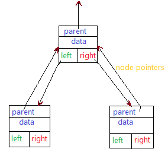
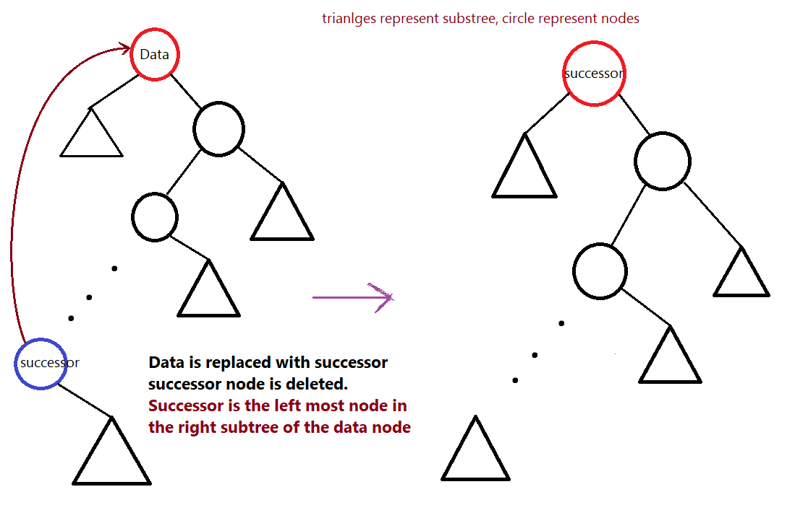

- It is a data-structure for an object with total order (comparable).
- The data is stored in a node which has pointers to parent, left child, right child.
- Data smaller than the current node data are towards the left child, larger data are towards right child.
- Node for a binary tree. Each box is a node object.

Functions
- add(Data)
Adds the Data into the tree structure.
- Traverse along the tree untill a null pointer is found.
- If Data is smaller than current node data then go left, greater then go right.
- Once a null pointer is reached create a new node with Data and make the child parent relationship.
- If Data is smaller than parent then it will to the left else right.
- Increment the size attribute of the tree.
- find(Data)
Returns the node object which has same data as the parameter.
null is it does not exist.
- Compare the data with the current node data, if data is smaller move left, else move right.
- Once we find a node data equal to Data return that node.
- If a null pointer is reached, then the Data does not exist return null.
- remove(Data)
Removes the first occurence (closest to the root) of the data, returns boolean.
- Find the node containing Data.
- There can be four cases for the node.
- Node with one child towars left
Then, replace the Data node with the child at left.
- Node with one child towars right
Then, replace the Data node with the child at right.
- Node with no child
Then, just make the node null.
- Node with both children
Then, replace the data attribute with that of the successor (data just great than current node)
or predecessor. Delete the successor or predecessor node.

- Decrement the size attribute of the tree, return true.
- If the Data does not exist then return false.
Example
Here we have given tree for int data, Can be easily replaced for other objects with total order.
Equal data are usually not allowed but in
this example we have put it towards the right child (can be either side).
Binary tree code